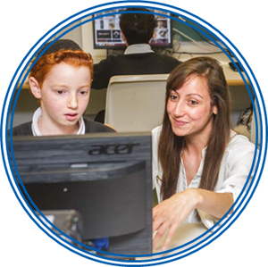

Miles Berry offers his thoughts on the needs and requirements of computational thinking in schools
Computing At School provide a response to DfE consultation on new GCSE CS criteria
Computing at School offer a response to DfE consultation on A level E CS criteria
Teachers skills levels and requirements are key to the delivery of Computing, identified here are the subject knowledge requirements for entry into computer science teacher training
The LGfL Computing Homepage offers links to resources, policy and support for the delivery of computing in your school
Infrastructure is key to delivering a challenging and robust POS, tools such as the NAACE SRF can also help identify where change is required
Managing Change for Computing (Word Doc) checklist developed by Somerset LA and ELIM
How will your options at KS4 be structured if Computer Science is part of the EBACC reporting?
Introduction
In September 2014, computing is replacing ICT as a national curriculum subject at all key stages. Computing is concerned with how computers and computer systems work, how they are designed and programmed, how to apply computational thinking, and how to make best use of information technology. It aims to give pupils a broad education that encourages creativity and equips them with the knowledge and skills to understand and change the world.
Computing brings new challenges and opportunities that should excite and empower pupils and teachers. Some of these changes may require you to update existing skills and knowledge. However, there is also a lot of material that should already be familiar.
This guide is intended to support teachers from a broad range of backgrounds. It also aims to
provide a starting point for school leadership teams who are looking to understand the best ways to go about delivering computing in the landscape of a changing curriculum, taking into account progression into and out of secondary education.
